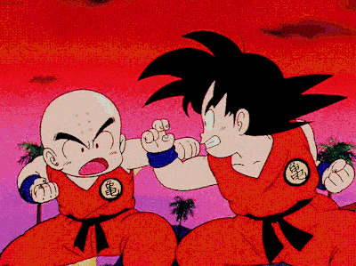

Toda esta historia comienza en el Dragon ball original con los siguientes arcos.
El Arco de la Búsqueda de las Esferas del Dragón[1] (ドラゴンボール探さがし編へん, Doragon Bōru Sagashi Hen) es el primer arco argumental de Dragon Ball, abarca desde los episodios 1-13 (13 episodios del anime) y los capítulos del 1-23 (23 capítulos del manga). Es el comienzo de la aventura de Son Goku en la búsqueda de las Esferas del Dragón junto a Bulma. También se le conoce bajo el título alterno de Arco de Pilaf[2] (ピラフ編へん, Pirafu Hen).
Una chica con 16 años, ha iniciado un largo viaje para encontrar las esferas del dragón, de las que habla una leyenda. Cada una de estas esferas, según su orden, tiene un número concreto de estrellas. Si se encuentran las siete esferas del dragón y se reúnen, se podría convocar a un dragón sagrado, que concedería un deseo. Bulma, al igual que su padre, es experta en electrónica, y ella misma ha sido capaz de construir un radar que detecta donde se encuentran las esferas de dragón en ese instante. Al iniciar la aventura se encuentra con un chico de 12 años bastante extraño, con cola de mono y una extraordinaria fuerza: Son Goku. Todo ello lo demuestra ante el accidente que tiene Bulma con su coche, ante el que Goku reaccionó rápidamente. Él solo es capaz de levantarlo y apenas es dañado por la pistola de Bulma. Además, Goku posee la esfera de cuatro estrellas, que parece que fue un regalo de su abuelo ya muerto y, de momento, lo utiliza para hablar con él. Goku, por tanto, aún no conoce la leyenda. Así pues, Bulma se la cuenta y decide adoptarlo. Goku le servirá de gran ayuda en sus aventuras.
l
Su relación no marcha bien, a decir verdad se llevan bastante mal, pero al menos Bulma había conseguido otra esfera del dragón y algún provecho había sacado de ello. Ya iniciada su marcha, Goku encuentra una pobre tortuga que tiene problemas para continuar su camino de llegada al mar. Goku, contra la decisión de Bulma, decide ayudar a la tortuga y esta va a buscar a su amo, Maestro Roshi, para que les conceda un regalo. A Bulma le da la esfera del dragón, aunque a cambio le pide que le deje ver sus braguitas. Maestro Roshi se lleva una sorpresa porque la noche anterior Goku había quitado la ropa interior a Bulma mientras ella dormía. A Son Goku le regala la nube Kinton, en la que sólo pueden montar las personas de buen corazón, es decir, ni Bulma ni Maestro Roshi.
Posteriormente, llegan a un pequeño pueblo, donde Oolong, un cerdo con capacidad de transformarse, amenaza continuamente a todos sus habitantes. Goku derrota a Oolong y Bulma decide llevárselo con ellos. A continuación, llegarán a un desierto dominado por Yamcha y Puar, unos salteadores que interrumpen su camino. Primeros años en Dragon Ball. A pesar de que Goku no podía luchar porque estaba hambriento, Yamcha cae derrotado. Al parecer, este tímido luchador se enrojece y pierde toda su fuerza cuando ve a una chica como Bulma. Puar, con las mismas cualidades que Oolong, también tiene el poder de transformarse y, de ésta forma, utiliza una droga contra ellos para que Yamcha pueda robar las esferas del dragón y cumplir un curioso deseo, el de eliminar su timidez con las chicas. Nada se cumple según sus objetivos, de tal manera que al final les sigue de lejos cuando ya se han marchado de aquel lugar.
Según el radar de Bulma, la siguiente esfera la podrán encontrar en la montaña de Gyumao, un hombre gigante muy amigo del abuelo de Goku (Son Gohan) y de Maestro Roshi, que fue su maestro. La montaña está en llamas y ha ordenado a su hija Chi-Chi buscar a Maestro Roshi para coger un abanico mágico fabricado con las hojas de una palmera. Goku decide buscarla y la encuentra perseguida por un dinosaurio. Decide recogerla y buscar a Kame Sennin en su nube kinton para ir más rápido. De nuevo, Kame Sen'nin arreglará la situación pidiéndole a Bulma que le enseñe su pecho, aunque esta vez ella le pide a Oolong que la imite y haga lo que Kame Sennin le ordene. El abanico no funciona y utiliza su KameHameHa, aunque todo queda destruido. Bulma encuentra la esfera y Goku es sorprendido por todos simulando el Kamehameha aunque su coche queda destruido. Gyumao les prestará otro y Yamcha y Puar continúan el mismo camino. Ahora deben enfrentarse a el Jefe Conejo y sus secuaces. Es un conejo que ha transformado a Bulma en zanahoria. Con la ayuda de Yamcha y de Goku, Bulma recupera su aspecto.
Cuando van a encontrar la siguiente esfera, son atracados y pierden la mochila en donde se encontraban las esferas del dragón. Yamcha decide ayudarles y se dirigen al castillo de Pilaf, un pequeño hombre azul que también quiere ver cumplido su deseo, junto con Shu y Mai. Todos acaban encerrados en una sala y Pilaf se comunica con ellos con una pantalla. Morirán de calor... Pilaf invoca al dragón Shen Long. Goku encuentra la solución involuntariamente. Al mirar a la luna llena, se transforma en un mono gigante (ozaru). Oolong, para frenar a Pilaf, pide su propio deseo: unas braguitas. Shen long desaparece con las esferas. Yamcha corta la cola de Goku con Puar transformado antes de que éste vuelva a su estado normal. Todos deciden volver a la ciudad. Bulma y Yamcha parecen enamorados, por lo que ambos han visto realizado su deseo sin pedírselo al dragón. Goku, sin embargo, acepta la oferta de Maestro Roshi para ser su nuevo discípulo.
Saga de la 21° Edición del Torneo de Artes Marciales es la segunda saga de Dragon Ball, abarca desde los episodios 14-28 (15 episodios del anime) y los capítulos del 24-54 (30 capítulos del manga). Las batallas del gran torneo de artes marciales donde se enfrentan los hombres más fuerte comienzan.
El Maestro Roshi les invita a participar en la 21 edición del Torneo de Artes Marciales en el que compiten los luchadores y luchadoras más poderosos y con mejor técnica en el mundo. Para sorpresa de Goku y Krilin, allí se encuentran con Yamcha, Bulma y Puar. Primero deberían pasar una ronda de combates y después se iniciaría el gran torneo. Goku y Nam luchan en los aires  Todos consiguen superarlo. Kame Sennin, para no ser descubierto por sus discípulos, se disfraza de Jackie Chun y elimina a Yamcha en el primer combate, mostrando la gran diferencia de habilidades existente entre ambos. A Krilin le toca luchar contra Bacterian, un hombre obeso que desprende un olor muy repugnante. Esto no es problema para Krilin, que carece de nariz y, por tanto, no posee el sentido del olfato. Nam, un monje, el hombre más fuerte de su pueblo, participa con el objetivo comprar agua con el dinero del premio. De esta forma eliminaría las dificultades y carencias que hay con el agua en su pueblo. Le toca luchar con Ranfan, una chica muy atractiva que precisamente utiliza su imagen para ganar, desprendiéndose de su ropa para asustar al adversario. Nam consigue superarlo y gana el combate.
En la siguiente ronda, Krilin se enfrenta con Jackie Chun, que derrotó fácilmente a su discípulo. Goku venció a Nam con bastantes dificultades, lo que supuso un difícil golpe para el segundo. Kame Sennin, bondadoso en el fondo, le regala a Nam una cápsula para que lleve todo el agua que necesite. Digamos que esto fueron las semifinales.
En el combate final, entre Goku y su propio maestro se dan varios golpes de humor. Jackie Chun utiliza su técnica de imitación del borracho, por lo que Goku decide simular los movimientos del mono. El combate estaba siendo muy duro y en aquel momento salió la luna, lo que implicó la transformación de Goku en Ozaru. La resistencia fue lo que midió la victoria final. Kame Sennin destruyó el satélite, por lo que Goku volvió a su estado normal. Estando ambos agotados, Goku llegó al suelo antes que su maestro, hasta entonces el más fuerte del planeta.
El Arco del Gran Rey Demonio Piccolo es uno de las arcos del anime de Dragon Ball y su manga. Abarca los episodios 102-122 del anime (21 episodios).
Tras el difícil torneo todos se dirigieron a un restaurante. Goku se dió cuenta de que había olvidado su bastón y su esfera del dragón en el torneo y Krilin se ofreció a buscarlos. Después de un rato Krilin no había vuelto y Goku sintió que habia pasado algo. Fue al torneo y encontró a su amigo asesinado a manos de Tambourine bajo las órdenes del Gran Rey Demonio Piccolo. Inmediatamente Goku marchó en búsqueda del asesino, que lo derrotó sin problemas, pues no tenía fuerza después de un torneo tan difícil como el anterior. Además, su nube Kinton fue destruida. Nam, Giran y Lobo Hombre también fueron asesinados. Y es que Tambourine había robado una lista de los participantes del torneo para acabar con sus participantes, así eliminarlos para asegurarse de que nadie pudiese vencer al Rey Piccolo. Él es un demonio que muchos años atrás sembró destrucción por todo el planeta, pero fue encerrado por Mutaito, maestro de Kame-Sen'nin y Tsuru-Sen'nin en un termo electrónico, sacrificando su vida. Pilaf lo encontró en el mar y lo liberó y ahora era uno de sus aliados. Quería las esferas del Dragón para rejuvenecer.
El mismo Pilaf supone que le regalará algunos países cuando haya conquistado el mundo. En esta aventura, Goku conoce a Yajirobe, que le reta, porque Goku se había comido su pez asado. Aparece en escena Cymbal, otro aliado de Piccolo que está buscando las esferas. Bien, Yajirobe tenía una de estas esferas colgada en el cuello y consigue derrotar al monstruo. Goku ha conseguido un nuevo amigo y, además, una de las esferas para resucitar a su amigo. Pronto llega el hermano del monstruo, Tambourine. Esta vez, descansado y alimentado, Goku lo derrota. Al encuentro del Gran Rey Demonio Piccolo, éste demuestra ser muy superior a Goku y vence. Puesto a que Kame-Sen'nin conoce la técnica de Mutaito realiza el Mafuba para encerrar a Piccolo, pero falla y muere. Al tener las esferas en su poder Piccolo invoca a Shen Long para pedir la juventud eterna y recuperar todo su poder, Chaoz intenta sabotear su deseo, pero Piccolo lo mata fácilmente. Finalmente, Piccolo consigue la juventud eterna al pedirle este deseo a Shen Long y mata al dragón para que no se puedan pedir más deseos. Tenshinhan entrena para realizar la técnica de Mutaito. Mientras todo esto acontece, a Goku se le ocurre volver a subir a la cima de la Torre de Karin para beber el agua sagrada. Marcha con Yajirobe y Karin les introduce en el laberinto que lleva hasta el agua sagrada). Además, les ha advertido de que puede ser un veneno que le causaría la muerte inmediatamente. Consigue satisfactoriamente beber el agua sagrada y se dirige cerca de la casa de los padres de Bulma, región que Piccolo quiere destruir. Mientras llega a la superficie, Tenshinhan detiene al Gran Rey Demonio Piccolo, previamente a su nuevo aliado Drum. Goku llega cuando Tenshinhan está a punto de morir. Es un combate muy igualado. Goku atraviesa el cuerpo del rey de los demonios, que, antes de morir expulsa un huevo, de donde nacerá Piccolo
Goku regresa a la Torre Sagrada y Karin le ofrece algunas Semillas del Ermitaño. Así pues, Goku decide buscar a Kami, que se encuentra en un templo algo más arriba de la Torre, en el aire. Goku consigue superar duras pruebas y llega al templo de Kami con ayuda de su Báculo Mágico. Allí, el servidor de Kami, Mr. Popo, un hombre negro al que le enseña el cascabel que le dio Karin como prueba de su llegada, le dice que para ver a Kami primero tendrá que derrotarle. A pesar de que Goku no ha vencido a Mr. Popo, Kami quiere verlo. Goku descubre que es muy parecido al Gran Rey Demonio Piccolo y éste le dice que Piccolo provenía de la parte mala de su ser, que antes estaban en el mismo cuerpo. Además Kami sabe que Piccolo buscará a Goku para derrotarlo. Así que le pide entrenarse allí, en el cielo, durante tres años, para poder derrotar a Piccolo, Goku acepta la propuesta, con lo que Kami resucita a Shen Long y con ello las Esferas vuelven a funcionar.